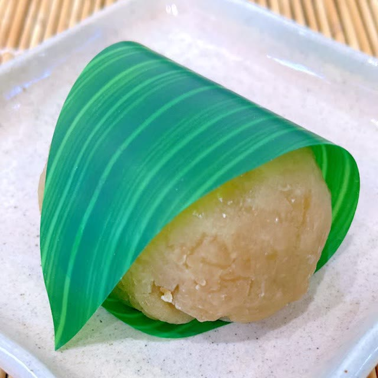
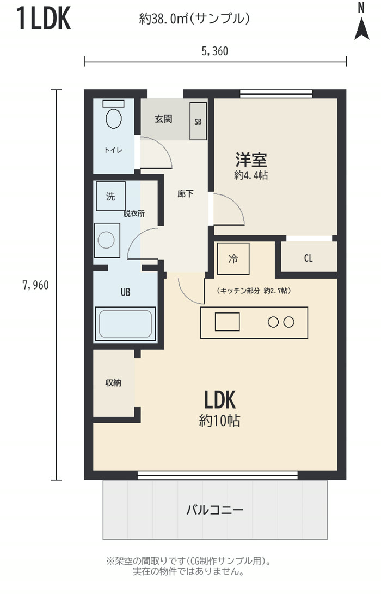
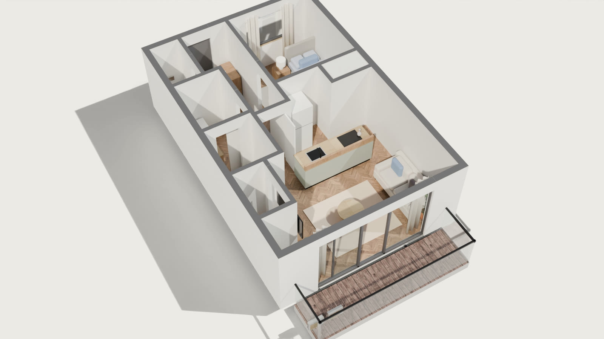
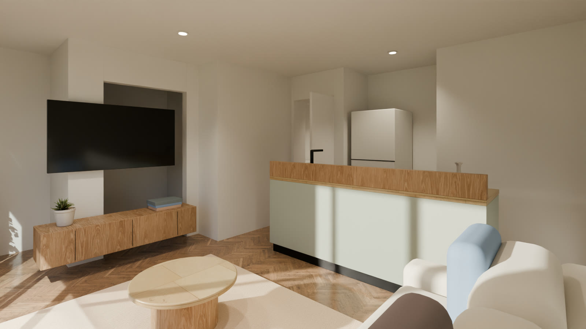
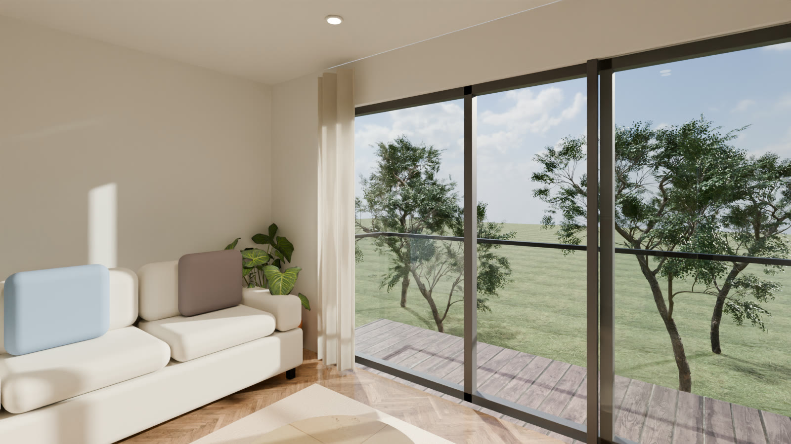

和菓子処あんこや
このあんころ餅を、
こう見せた。

不動産会社さま
建築現場が、
焼き芋の釜だった。
小さな職人たちの現場から、家族のあたたかい時間へつなぐイメージCMです。
映像にはCG・AIによるイメージを含みます。
制作サンプル|賃貸1LDK
図面だけで、
まだない部屋を見せる。
間取り図の寸法から、壁・建具・家具を一つずつ3Dで組み立てました。着工前の新築や、リフォームのあとの姿を、写真が撮れる前から伝えられます。




架空の間取りから作ったCGイメージです。実在の物件ではありません。
何を撮るかの前に、
どう語るかを考えます。
ほかの仕事も、
語り方から。
ワイズホーム
空き家の相談を、
取調室の自白に。
放っておいた空き家を、刑事に問い詰められる2時間ドラマ風に描きました。
映像にはCG・AIによるイメージを含みます。
次は、
御社の現場を。
図面には残らない手間にこそ、話したくなる物語があります。
- 見えなくなる下地に、かけた手間
- 職人が、最後まで譲らなかった納まり
- リフォームで変わった、家族の朝
御社の仕事を、
聞かせてください。
自社の仕事を相談する
まだ何も決まっていなくても大丈夫です。